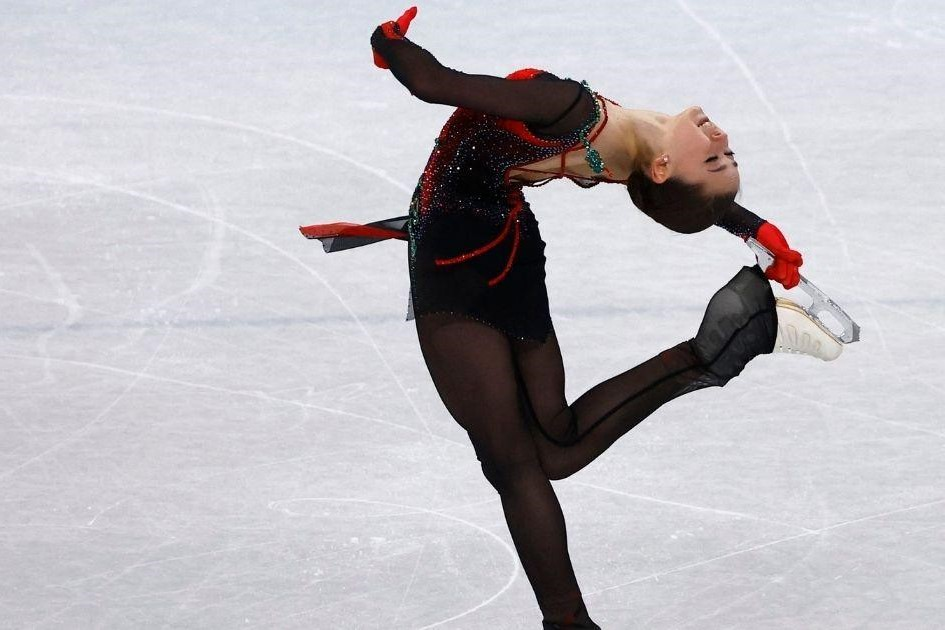

Published January 29, 2024
GENEVA — Russian figure skater Kamila Valieva received a four-year doping ban on Monday, effectively stripping the Russian Olympic Committee (ROC) of its gold medal in the team event from the 2022 Beijing Winter Games nearly two years after the fact.
In its long-awaited ruling, the highest court in sport found Valieva guilty of committing an anti-doping rule violation that rattled the Beijing Olympics and frustrated competitors who are still waiting for their medals from the event to be allocated.
"Kamila Valieva is found to have committed an anti-doping rule violation and sanctioned with a four-year period of ineligibility commencing on 25 December 2021," the Court of Arbitration for Sport (CAS) said.
The court added that all competitive results achieved since that date are voided, including the gold medal she helped ROC win in the team event at the 2022 Games.
The World Anti-Doping Agency (WADA), one of the parties that brought the case to CAS, welcomed the decision, describing it as a victory for fair sport.